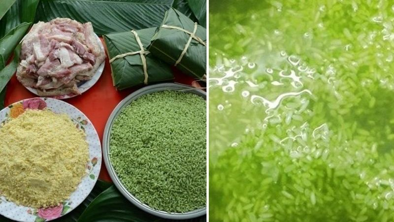
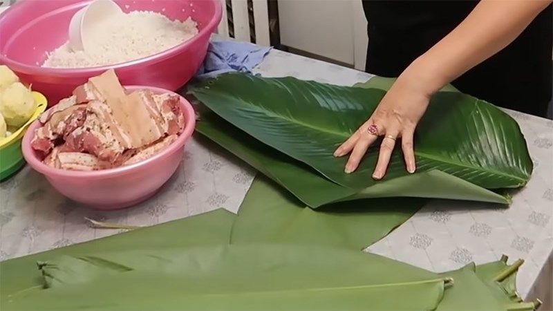
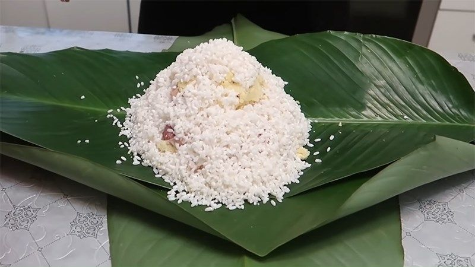
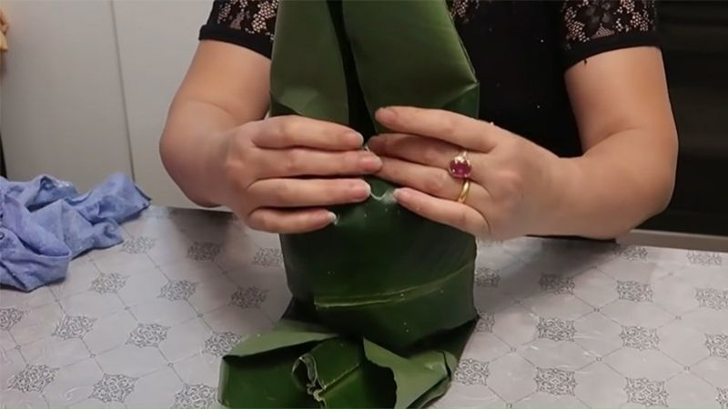
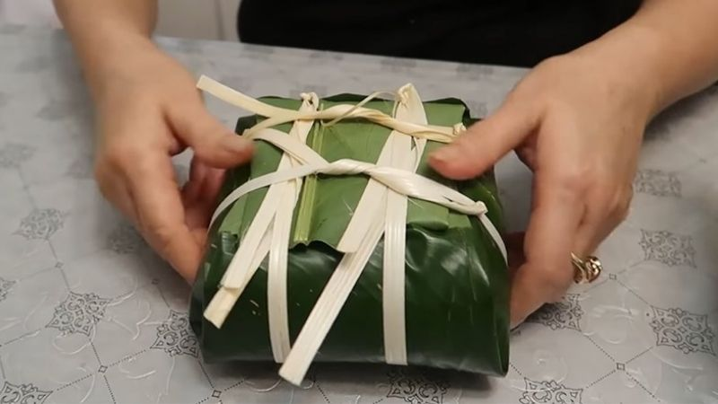
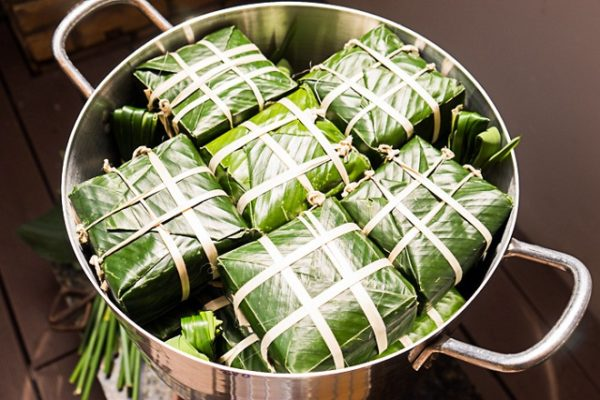
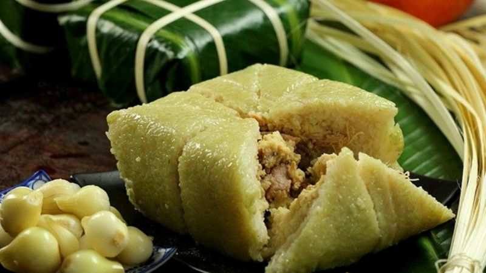
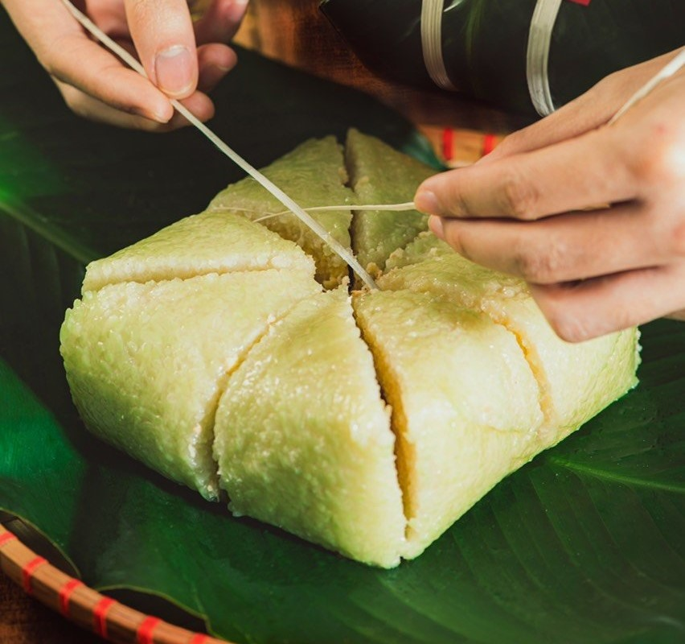

19/12/2019
BÁNH CHƯNGBánh chưng tự làm luôn khiến người ta cảm thấy ngon miệng và yên tâm khi ăn hơn bánh chưng mua ở ngoài hàng. Nếu bạn muốn biết cách làm và gói bánh chưng ngon đẹp mắt, hãy tham khảo hướng dẫn ngay sau đây.
Nguyên liệu
- 300g Thịt heo
- 650g Gạo nếp
- 400g Đậu xanh tách vỏ
- Lá chuối hoặc Lá dong
- Gia vị: muối, đường, tiêu
Cách chế biến
Chuẩn bị nhân bánh và lá gói bánh
Lá chuối hay lá dong mua về, rửa sạch.
Ngâm gạo nếp, đậu xanh không vỏ trước khi gói tầm 4 tiếng hoặc để qua đêm, có thể ngâm gạo nếp với lá chuối hay lá dứa để nếp thơm ngon và có màu xanh.
Chuẩn bị nhân bánh và lá gói bánh
Sơ chế nguyên liệu
Sau khi ngâm xong, bạn đổ nếp ra rổ và để ráo, thêm 1 tới 2 muỗng muối vào và trộn đều. Đậu xanh cũng đổ ra rổ, thêm muối và tiêu rồi trộn đều.
Thịt heo rửa và cắt miếng. Cách ướp thịt gói bánh chưng rất đơn giản, bạn chỉ cần ướp với muối, đường, tiêu với lượng vừa ăn là được. Ngoài ra, bạn có thể tham khảo thêm cách làm nhân bánh chưng ngon

Sơ chế nguyên liệu
Gói bánh
Đầu tiên bạn úp mặt xanh đậm của 1 lá dong xuống theo chiều dọc. Kế đến bạn ngửa mặt xanh đậm của 2 lá dong còn lại lên và và đặt theo chiều ngang, xếp sao cho 4 lá vuông góc với nhau
Gấp lá dong
Bạn cho vào theo thứ tự 1 lớp gạo nếp, 1 lớp đậu xanh, 1 lớp thịt heo, 1 lớp đậu xanh và cuối cùng cho 1 lớp gạo nếp.
Thêm nhân vào bánh chưng
Đầu tiên bạn giữ 2 mép lá nằm phía dọc của bánh rồi dùng tay gấp và cuộn lá sao cho phần nếp được cố định.
Bước tiếp theo thì bạn giữ mép vừa gấp bằng một tay, tay còn lại thì bạn gập 1 bên của lá theo chiều ngang.
Sau đó bạn dựng đứng bánh lên, giữ chặt và vỗ nhẹ bánh xuống mặt bàn để phần nhân bánh được dàn dều. Tiếp theo bạn gấp phần lá ở phía trên vào, dựng bánh phía bên này xuống mặt bàn và thực hiện tương tự với bên còn lại.
Gói bánh
Lấy 2 dây lạt buộc song song với nhau để giữ chặt bánh và không bị bung chặt. Kế đến, bạn buộc tiếp 2 chiếc lạt vuông góc với 2 lạt trên.
Buộc dây
Luộc bánh chưng
Cách luộc bánh chưng thì bạn làm như sau
Đầu tiên xếp bánh chưng đã gói vào nồi, đổ nước ngập mặt bánh, luộc bánh kích cỡ nhỏ khoảng 5 tiếng sẽ chín nhưng bánh cỡ lớn sẽ có thời gian nấu lâu hơn.
Luôn chuẩn bị 1 ấm nước sôi bên cạnh để khi nước trong nồi cạn, bạn kịp thời tiếp thêm nước, không đổ nước lạnh vào nồi. Khi luộc được nửa thời gian bạn nên mở nắp nồi, đảo mặt bánh để bánh chín đều hơn.
Luộc bánh chưng
Thành phẩm
Sau khi bánh chín, bạn lấy ra khỏi nồi cho bánh vào nước lạnh ngâm tầm 20 phút rồi xếp bánh ra mặt bàn, dùng đồ nặng đè lên để ép nước ra khỏi cho bánh ráo ngon và giữ được lâu, thời gian ép hết nước từ khoảng 5 đến 8 tiếng.
Sau đó là có thể thưởng thức rồi nhé!
Thành phẩm
Thưởng thức

Món bánh chưng thơm ngon
Những lưu ý khi luộc bánh chưng
Trong suốt thời gian luộc bánh chưng, bạn cần lưu ý những điều sau là cách luộc bánh chưng lá vẫn xanh và giữ hương vị thơm ngon:
- Trước khi xếp bánh chưng vào nồi, bạn cần xếp một lớp cuống lá dong bên dưới để bánh không bị cháy và dính đáy nồi.
- Xếp bánh thành các tầng chồng lên nhau ngay ngắn và chặt để bánh được giữ cố định, phòng khi nước sôi có lực đẩy khiến bánh bị xô đẩy sẽ bị vỡ.
- Sau khi nồi bánh chưng đã sôi, bạn giảm lửa (đối với nồi luộc bếp than, bếp củi) hoặc giảm nhiệt độ ( nếu luộc bánh chưng bằng nồi áp suất hoặc bằng điện). Chỉ để lửa liu riu trong suốt quá trình luộc bánh chưng.
Bánh chưng ngon, gói đẹp, bạn có thể tự tin đặt trên mâm cổ cúng gia tiên hoặc gửi tặng cho người thân, bạn bè. Ngoài ra, nếu dùng không hết, bạn có thể đem bảo quản bánh trong ngăn mát của tủ lạnh. Lúc dùng chỉ cần cho bánh vào lò vi sóng hâm lại là được nhé! Bạn cũng có thể xem thêm các cách chọn bánh chưng làm sẵn cho ngày Tết ngon, an toàn
Làm và gói bánh chưng tưởng chừng rất khó nhưng khi thực sự bắt tay làm bạn sẽ thấy nó rất đơn giản. Nếu bạn có nhiều kinh nghiệm về làm và gói bánh chưng thì đừng ngần ngại mà hãy chia sẻ cùng ANTET nhé!

3 comments

6 likes